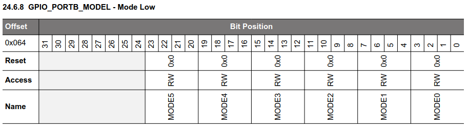
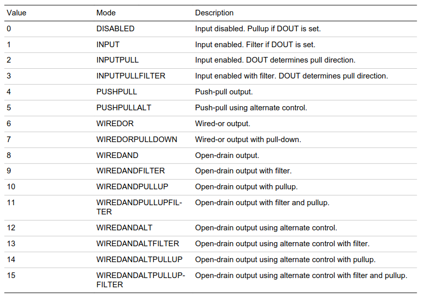
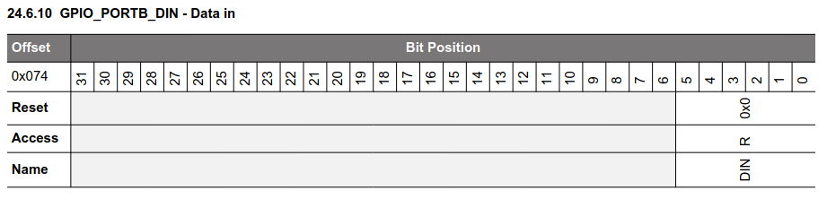

Interfaces - part 1
Interface: a means (hardware and software) of connecting a peripheral to the microcontroller or to the microcontroller board.
GPIO (General Purpose digital Input Output)
- Microcontroller pin which can handle a digital value: 0 or 1
- Signal voltage for bit value 0 is 0 V
- Signal voltage for bit value 1 depends on microcontroller. Usually: supply voltage (e.g. 3.3 V)
- Can be configured either as an input or as an output (with different modes)
- On a microcontroller: usually several "ports" of GPIOs
- Ports are labelled, by a letter or by a number
- In a given port, each GPIO is numbered
For instance: PA00 to PA07, PB00 to PB03, PC00 to PC09 and PD00 to PD05.
GPIO as an output

- When PD02 is at 1 (i.e. VMCU), the LED is off, as no current can flow through it
- When PD02 is at 0 (i.e. 0 V), the LED is on, as some current can flow through it
Easy, isn't it? 🙂
The physical world has some constraints
- Current through the LED should not be greater than a value depending on the LED (for instance: 1.5 mA)
- A resistor in series with the LED can limit the current. Resistor value is given by Ohm's law:
R137 = VMCU / Imax - We have
VMCU = 3.3 Vand decide onImax = 1.5 mA - ⇒
R137 = 2.2 kΩ
GPIO as an input - 1/2

- When the switch is closed, PB02 is set to 0 (GND = 0 V)
- When the switch is open, PB02 is not set. It is "floating"
How to set PB02 to 1 when the switch is open?
GPIO as an input - 2/2

- R140 ensures that PB02 is set to 1 when the switch is open
- It is named pullup resistor
- The resistor value is large enough to get a low current through it (but beware: it is not null)
- If the switch was connected to VMCU instead of GND, we would use a pulldown resistor
The microcontroller may provide internal pullup/pulldown resistors.
This is the case for the EFR32MG24.
Hardware API
To summarize, configuration of a given GPIO pin:
- Output or input
- If input: internal pulldown resistor, internal pullup resistor, no internal resistor
- Etc.
The microcontroller provides an interface to use the GPIO pins.
The interface
- A set of registers
- The values which can be written to the registers, to configure a given GPIO pin
- The values which can be read from the registers, to get the state of a given GPIO pin
Reminder: a register is a small amount of storage within the microcontroller (RAM).
GPIO registers of the EFR32MG24
Reminder: the board uses pin 2 of port D as output (LED) and pin 2 of port B as input (button).
First, pin 2 of port B must be configured as an input, with GPIO_PORTB_MODEL:
Each pin is configured by a block of 4 bits. For pin 2: MODE2.
Configuration values:
The board provides a pullup resistor ⇒ no need to use the internal one.
Consequently, the value to write into MODE2 is 1 (INPUT mode).
Additionally, bit 2 of GPIO_PORTB_DOUT must be set to 0 to disable filtering:
We'll see later what filtering is about.
State of pin 2 of port B can now be read from GPIO_PORTB_DIN:
State of the port is in bit 2.
GPIO summary
To be able to read the state of a GPIO pin on the EFR32MG24:
- Some data must be written into two registers, to configure the pin
- Then, pin state can be read from a third register
Note: we'll see later that more configuration is usually required, involving more registers!